용접기능사 (2009-09-27 기출문제)
1과목: 용접일반
1. 피복아크 용접봉의 피복제의 주된 역할로 옳은 것은?
- 스패터의 발생을 많게 한다.
- 용착 금속에 필요한 합금원소를 제거한다.
- 모재 표면에 산화물이 생기게 한다.
- 용착금속의 냉각속도를 느리게 하여 급랭을 방지한다.
(정답률: 83%)

2. 저압식 토치의 아세틸렌 사용압력은 발생기식의 몇 kgf/cm2 이하의 압력으로 사용하여야 하는가?
- 0.3
- 0.07
- 0.17
- 0.4
(정답률: 61%)
3. 가스용접봉을 선택하는 공식으로 다음 중 맞는 것은?(단, D:용접봉지름[mm], T:판 두께[mm]이다.)
- D = T/2 + 1
- D = T/2 + 2
- D = T/2 - 2
- D = T/2- 1
(정답률: 82%)
4. 직류아크 용접기와 비교하여 교류아크 용접기에 대한 설명으로 가장 올바른 것은?
- 무부하 전압이 높고 감전의 위험이 많다.
- 구조가 복잡하고 극성변화가 가능하다.
- 자기쏠림 방지가 불가능하다.
- 아크가 비교적 안정적이다.
(정답률: 59%)
5. 산소용기의 내용적이 33.7ℓ인 용기에 120kgf/㎠ 이 충전되어 있을 때, 대기압 환산용적은 몇 ℓ인가?
- 2803
- 4044
- 404400
- 3560
(정답률: 86%)
6. 가스 절단시 산소 대 프로판 가스의 혼합비로 적당한 것은?
- 2.0 : 1
- 4.5 : 1
- 3.0 : 1
- 3.5 : 1
(정답률: 80%)
7. 피복제의 계통에 따른 용접봉의 종류를 표시한 것이다. 틀린 것은?
- 일미타이트계 - E4301
- 라임티타니아계 - E4303
- 철분산화티탄계 - E4324
- 고산화티탄계 - E4316
(정답률: 73%)
8. 아크에어 가우징에 사용되는 전극봉은?
- 피복 금속봉
- 탄소 전극봉
- 텅스텐 전극봉
- 플라스마 전극봉
(정답률: 46%)
9. 용접에 사용되지 않는 열원은?
- 기계적 에너지
- 전기 에너지
- 위치 에너지
- 가스 에너지
(정답률: 85%)
10. 산소와 아세틸렌을 1:1로 혼합하여 연소시킬 때 생성되는 불꽃이 아닌 것은?
- 불꽃심
- 속불꽃
- 겉불꽃
- 산화불꽃
(정답률: 78%)
11. 작업자 사이에 현장(노천)에서 다른 사람에게 유해광선의 해(害)를 끼치지 않게 하기 위하여 여러 사람이 공동으로 용접작업을 할 때 설치해야 하는 것은?
- 차광막
- 경계통로
- 환기장치
- 집진장치
(정답률: 90%)
12. 강재 표면의 홈이나 개재물, 탈탄층 등을 제거하기 위해 얇고, 타원형 모양으로 표면을 깍아내는 가공법은?
- 가스 가우징(Gas gouging)
- 너깃(nugget)
- 스카핑(scarfing)
- 아크 에어 가우징(arc air gouging)
(정답률: 84%)
13. 용접기의 특성 중에서 MIG 또는 CO2용접 등에 적합한 특성으로 일명 CP특성이라고도 하는 특성은?
- 상승특성
- 정전류특성
- 수하특성
- 정전압특성
(정답률: 50%)
14. 프로판 가스의 성질에 대한 설명으로 틀린 것은?
- 쉽게 기화하며 발열량이 낮다.
- 액화하기 쉽고 용기에 넣어 수송이 편리하다.
- 온도 변화에 따른 팽창률이 크고 물에 잘 녹지 않는다.
- 상온에서는 기체 상태이고 무색, 투명하고 약간의 냄새가 난다.
(정답률: 50%)
15. 연강용 피복 아크 용접봉의 간접 작업성에 해당하는 것은?
- 아크 발생
- 스패터 제거의 난이도
- 용접봉 용융상태
- 슬래그 상태
(정답률: 51%)
16. 가스용접 작업에서 후진법이 전진법보다 더 좋은 점이 아닌 것은?
- 열 이용률이 좋다.
- 용접속도가 빠르다
- 얇은 판의 용접에 적당하다.
- 용접 변형이 작다.
(정답률: 69%)
17. 직류아크용접기로 두께가 15mm이고, 길이가 5m인 고장력 강판을 용접하는 도중에 아크가 용접봉 방향에서 한쪽으로 쏠리었다. 이러한 현상을 방지하는 방법 중 틀리게 설명한 것은?
- 용접봉 끝을 아크쏠림 반대 방향으로 기울일 것
- 용량이 더 큰 직류용접기로 교체할 것
- 용접부가 긴 경우에는 후퇴 용접법으로 할 것
- 이음의 처음과 끝에 엔드 탭을 이용할 것
(정답률: 78%)
18. 주조시 주형에 냉금을 삽입하여 주물표면을 급냉시키므로서 백선화하고 경도를 증가시킨 내마모성 주철에 해당되는 것은?
- 보통 주철
- 고급 주철
- 합금 주철
- 칠드 주철
(정답률: 65%)
19. 구리의 성질에 관한 설명으로 틀린 것은?
- 전기 및 열의 전도율이 높은 편이다.
- 전연성이 좋아 가공이 용이하다.
- 화학적 저항력이 적어서 부식이 쉽다.
- 아름다운 광택과 귀금속적 성질이 우수하다.
(정답률: 68%)
20. 일반적으로 철강을 크게 순철, 강, 주철로 대별할 때 기준이 되는 함유원소는?
- Si
- Mn
- P
- C
(정답률: 66%)
21. 강을 표준상태로 하기 위하여 가공조직의 균일화, 결정립의 미세화, 기계적 성질의 향상을 목적으로 소재나 A3나 Acm보다 30~50℃ 정도 높은 온도로 가열한 후 공냉하는 열처리 방법은?
- 불림
- 심냉
- 담금질
- 뜨임
(정답률: 54%)
22. 청백색의 조밀육방격자금속이며, 비중이 7.1. 용융점이 420℃인 금속명은?
- P
- Pb
- Sn
- Zn
(정답률: 47%)
23. 탄소강 특수원소를 첨가한 합금강(alloy steel)에서 특수 원소의 역할로 적당하지 않은 것은?
- 오스테나이트의 입자조정
- 변태속도의 변화
- 소성 가공성의 개량
- 황 등의 원소 첨가
(정답률: 50%)
24. 오스테나이트계 스테인리스강의 대표적인 화학적 조성으로 맞는 것은?
- 13%Cr, 18%Ni
- 13%Ni, 18%Cr
- 18%Ni, 8%Cr
- 18%Cr, 8%Ni
(정답률: 57%)
25. Al-Si계 합금의 조대한 공정조직을 미세화하기 위하여 나트륨(Na), 가성소다(NaOH), 알칼리염류 등을 합금 용탕에 첨가하여 10 ~ 15분간 유지하는 처리를 무엇이라 하는가?
- T6처리
- 응력제거 풀림처리
- 개량 처리
- 폴링 처리
(정답률: 45%)
26. 다음 그래프는 금속의 기계적 성질과 냉간가공도의 관계를 나타낸 것이다. ( )안에 들어갈 성질로 옳은 것은?
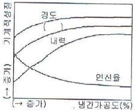
- 연성
- 전성
- 인장강도
- 단면수축율
(정답률: 68%)
27. 연강제 표면에 스텔라이트(Stellite)나 경합금을 용착시켜 표면경화 시키는 방법은?
- 브레이징(brazing)
- 숏 피닝(shot peening)
- 하드 페이싱(hard facing)
- 질화법(nitriding)
(정답률: 71%)
28. 주강의 설명으로 틀린 것은?
- 일반적인 주강의 탄소함량은 0.1 ~ 0.6% 정도이다.
- 기포, 기공 등이 생기기 쉬우므로 제강작업시 다량의 탈산제가 필요하다.
- 주조상태로는 취성이 있어 이것을 억제하기 위하여 Ac3보다 60~90℃ 높게 가열하여 저온 풀림처리를 한다.
- 주철로서는 강도가 부족 되는 곳에 사용된다.
(정답률: 47%)
29. 용접부의 결함 중 오버랩의 발생 원인으로 가장 거리가 먼 것은?
- 용접전류가 너무 낮을 때
- 운봉 및 봉의유지 각도가 불량할 때
- 모재에 황 함유량이 많을 때
- 용접봉의 선택이 잘못 되었을 때
(정답률: 55%)
30. 납땜에 사용되는 용제가 갖추어야 할 조건으로 틀린 것은?
- 청정한 금속면의 산화를 방지할 것.
- 납땜 후 슬래그의 제거가 용이할 것.
- 전기 저항 납땜에 사용되는 것은 부도체 일 것
- 모재나 땜납에 대한 부식 작용이 최소한 일 것
(정답률: 76%)
31. 용접 중에 아크를 중단 시키면 중단된 부분이 오목하거나 납작하게 파진 모습으로 남는 것을 무엇이라고 하는가?
- 오버 랩
- 언더 컷
- 은점
- 크레이터
(정답률: 62%)
32. X형 홈과 같이 양면용접이 가능한 경우에 용착 금속의 양과 패스 수를 줄일 목적으로 사용되며 모재가 두꺼울 수록 유리한 홈의 형상은?
- I형 홈
- V형 홈
- U형 홈
- H형 홈
(정답률: 58%)
33. 열전도율이 다음 중 가장 큰 금속은?
- 구리
- 알루미늄
- 스테인리스강
- 연강
(정답률: 70%)
34. 10-4mmHg 이상의 높은 진공실속에서 음극으로 부터 방출된 전자를 고전압으로 가속시켜, 피 용접물과의 충돌에 의한 에너지로 용접을 행하는 방법은?
- 레이저(laser) 용접
- 프라스마(plasma)아크 용접
- 일렉트론 빔(electron beam) 용접
- 논 가스(non gas) 용접
(정답률: 47%)
35. 이산화탄소 가스 아크 용접의 결함에서 아크가 불안정 할 때의 원인으로 틀린 것은?
- 팁이 마모되어 있다.
- 와이어 송급이 불안정하다.
- 팁과 모재간 거리가 길다.
- 이음 형상이 나쁘다.
(정답률: 55%)
2과목: 용접재료
36. 서브머지드 아크 용접에서 맞대기 용접이음시 받침쇠가 없을 경우 루트간격은 몇 mm 이하가 가장 적당한가?
- 0.8
- 1.5
- 2.0
- 2.5
(정답률: 53%)
37. 아크 용접의 재해라 볼 수 없는 것은?(오류 신고가 접수된 문제입니다. 반드시 정답과 해설을 확인하시기 바랍니다.)
- 아크 광선에 의한 전안염
- 스패터 비산으로 인한 화상
- 역화로 인한 화재
- 전격에 의한 감전
(정답률: 71%)
38. 전기용접기의 누전시 조치사항으로 가장 알맞은 것은?
- 전원 스위치를 내리고 누전된 부분을 절연시킨 후 계속 용접하여도 된다.
- 전압이 낮을 때에는 계속 용접하여도 된다.
- 용접기를 만지지만 않으면 계속 용접하여도 된다.
- 전원만 바꾸면 계속 용접하여도 된다.
(정답률: 80%)
39. 서브머지드 아크용접에서 연강용 와이어 중 저망간계의 망간함유량은 얼마인가?
- 0.5%이하
- 0.6~0.7%
- 0.8~0.9%
- 1~1.5%
(정답률: 47%)
40. 무색, 무취, 무미와 독성이 없고 공기 중에 약 0.94(%) 정도를 포함하는 불활성 가스는?
- 헬륨(He)
- 아르곤(Ar)
- 네온(Ne)
- 크립톤(Kr)
(정답률: 69%)
41. 대상물에 감마선, 엑스선을 투과시켜 필름에 나타나는 상으로 결함을 판별하는 비파괴 검사법은?
- 초음파 탐상 검사
- 침투 탐상 검사
- 와류 탐상 검사
- 방사선 투과 검사
(정답률: 81%)
42. 산업안전보건법 시행규칙상 안전을 표시하는 색채 중 특정행위의 지시 및 사실의 고지 등을 나타내는 색은?
- 노란색
- 녹색
- 파란색
- 흰색
(정답률: 70%)
43. 미그(MIG)용접 제어장치의 기능으로 아크가 처음 발생되기 전 보호가스를 흐르게 하여 아크를 안정되게 하여 결함발생을 방지하기 위한 것은?
- 스타트 시간
- 가스 지연 유출 시간
- 버언 백 시간
- 예비 가스 유출 시간
(정답률: 51%)
44. 용접선 양측을 일정 속도로 이동하는 가스 불꽃에 의해 용접선 나비의 60 ~ 150mm에 걸쳐서 150 ~ 200℃정도로 가열 후 수냉시키는 잔류응력 제거법은?
- 노내 풀림법
- 국부 풀림법
- 저온응력 완화법
- 기계적응력 완화법
(정답률: 61%)
45. 불활성가스 아크 용접법에 관한 설명으로 틀린 것은?(오류 신고가 접수된 문제입니다. 반드시 정답과 해설을 확인하시기 바랍니다.)
- 불활성 가스 아크 용접은 용접의 품질이 우수하고 전자세 용접이 가능하다.
- 텅스텐 아크용접(TIG)시 역극성으로 아르곤 가스를 이용하면 청정작용이 있다.
- 금속 아크 용접(MIG)은 교류 정전압 특성을 이용하므로 스패터가 많다.
- 금속 아크 용접(MIG)은 전류가 녹는 용극식 아크 용접으로 와이어가 아크열에 의해 선단으로부터 녹아서 용적이 되면서 모재로 이행해 나간다.
(정답률: 54%)
46. 용접법 중 전원이 필요하지 않은 용접법은?
- 플래시 용접법
- 프로젝션 용접법
- 테르밋 용접법
- 일렉트로 슬래그 용접법
(정답률: 64%)
47. 어떤 물질이 산소와 화합하여 완전 연소할 때 생기는 열량은?
- 생성열
- 연소열
- 분해열
- 발생열
(정답률: 79%)
48. 와전류 탐상 검사의 장점이 아닌 것은?
- 결함의 크기, 두께 및 재질의 변화 등을 동시에 검사할 수 있다.
- 결함 지시가 모니터에 전기적 신호로 나타나므로 기록 보존과 재생이 용이하다.
- 검사체의 표면으로부터 깊은 내부결함 및 강자성 금속도 탐상이 가능하다.
- 표면부 결함의 탐상감도가 우수하며 고온에서의 검사 및 얇고 가는 소재와 구멍의 내부 등을 검사할 수 있다.
(정답률: 41%)
49. 이산화탄소 가스 아크 용접의 특징으로 적당하지 않은 것은?
- 용착금속의 기계적 및 금속학적 성질이 우수하다.
- 피복 아크 용접처럼 피복 아크 용접봉을 갈아 끼우는 시간이 필요 없으므로 용접작업시간을 길게 할 수 있다.
- 전류밀도가 높아 용입이 깊고 용접속도를 빠르게 할 수 있다.
- 모든 재질에 적용이 가능하다.
(정답률: 55%)
50. 점용접의 3 요소에 대하여 설명한 것 중 맞는 것은?
- 용접전류, 가압력, 통전시간
- 가압력, 용접전압, 통전시간
- 용접전류, 용접전압, 가압력
- 용접전류, 용접전압, 통전시간
(정답률: 61%)
3과목: 기계제도
51. 그림과 같이 외형도에 있어서 파단선을 경계로 필요로 하는 요소의 일부만을 단면으로 표시하는 단면도는?
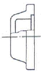
- 온 단면도
- 부분 단면도
- 한쪽 단면도
- 회전 단면도
(정답률: 67%)
52. 도면의 긴 쪽 길이을 가로방향으로 한 X형 용지에서 표제란의 위치로 가장 적당한 것은?
- 오른쪽 중앙
- 왼쪽 아래
- 오른쪽 아래
- 왼쪽 위
(정답률: 78%)
53. 그림과 같이 철판에 구멍이 뚫여있는 도면의 설명으로 올바른 것은?
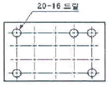
- 구멍지름 16mm, 구멍수량 20개
- 구멍지름 20mm, 구멍수량 16개
- 구멍지름 16mm, 구멍수량 5개
- 구멍지름 20mm, 구멍수량 5개
(정답률: 64%)
54. 그림과 같은 입체도의 화살표 방향이 정면일 경우 저면도로 가장 적합한 것은?
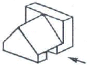
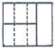
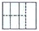
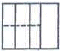
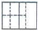
(정답률: 50%)
55. 치수 기입법에서 지름, 반지름, 구의 지름 및 반지름, 모따기, 두께 등을 표시할 때 사용되는 보조 기호로 잘못된 것은?
- 두께 : D5
- 반지름 : R3
- 모따기 : C3
- 구의 지름 : Sø6
(정답률: 73%)
56. 전개도법의 종류 중 주로 각기둥이나 원기둥의 전개에 가장 많이 이용되는 방법은?
- 삼각형을 이용한 전개도법
- 방사선을 이용한 전개도법
- 평행선을 이용한 전개도법
- 사각형을 이용한 전개도법
(정답률: 75%)
57. 그림과 같은 용접도시기호의 설명으로 올바른 것은?
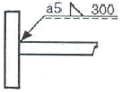
- 홈 깊이 5mm
- 목 길이 5mm
- 목 두께 5mm
- 루트 간격 5mm
(정답률: 47%)
58. 도면에 2가지 이상의 선이 같은 장소에 겹치어 나타내게 될 경우 우선순위가 가장 높은 것은?
- 숨은선
- 외형선
- 절단선
- 중심선
(정답률: 66%)
59. 그림과 같은 입체도에서 화살표방향이 정면일 경우, 평면도로 가장 적당한 것은?
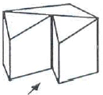
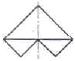
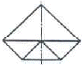
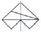
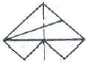
(정답률: 81%)
60. 배관 도시기호 중 글로브 밸브인 것은?
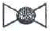
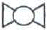
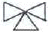
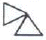
(정답률: 57%)